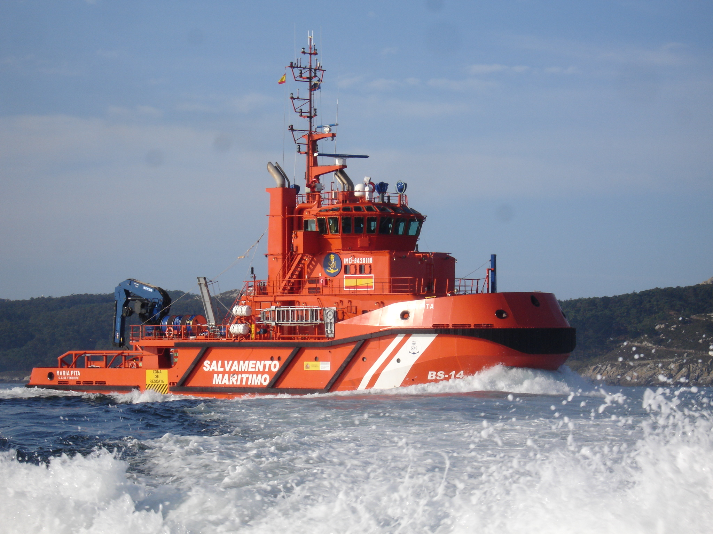

¿Quienes Somos?
Luz Marina es una organización de salvamento marítimo compuesta por un equipo de voluntarios cristianos dedicados a rescatar vidas en el mar. Guiados por la fe en Cristo, respondemos con compasión y esperanza en situaciones de emergencia, llevando ayuda y consuelo a quienes más lo necesitan. Creemos firmemente que cada acto de bondad es un reflejo del amor de Dios y trabajamos incansablemente para ser su mano extendida en momentos de crisis.

Nuestros voluntarios, están entrenados en técnicas avanzadas de rescate y primeros auxilios.
En momentos de crisis, Luz Marina es más que un equipo de rescate; somos una familia unida por la fe, lista para enfrentar cualquier desafío con valentía y devoción. Juntos, iluminamos el camino hacia la esperanza y la salvación, cumpliendo con nuestro llamado de ser la mano extendida de Dios en el mar.